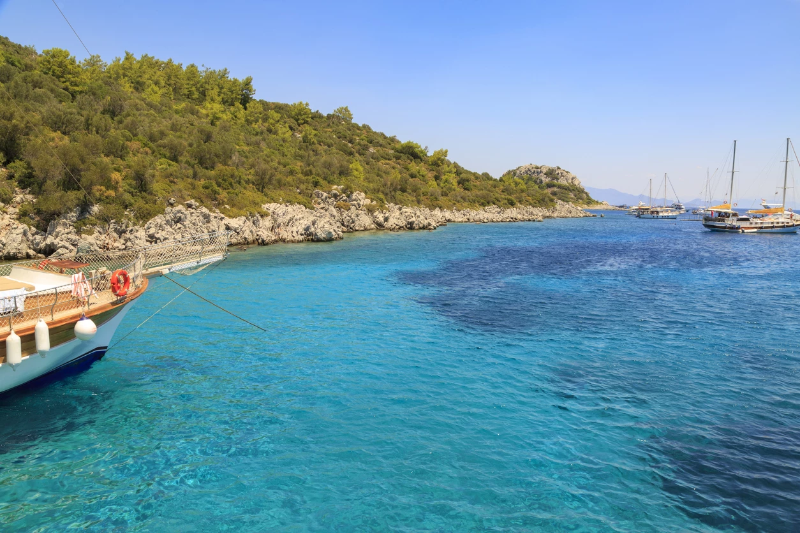
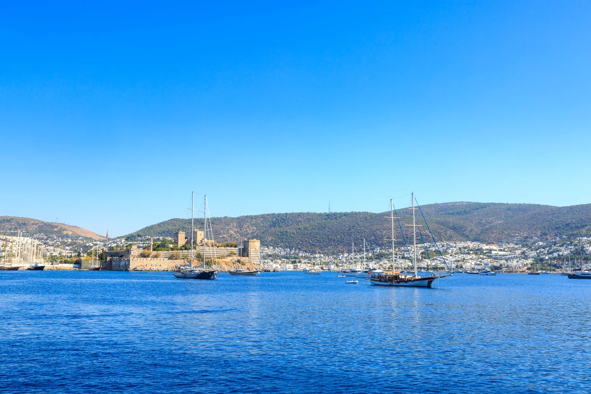
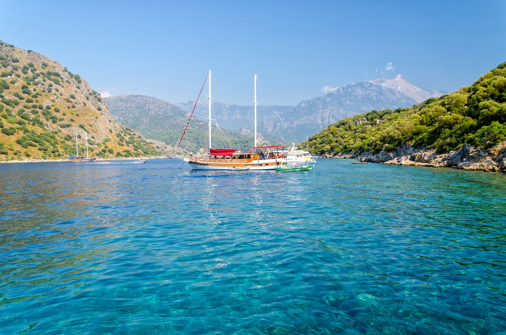
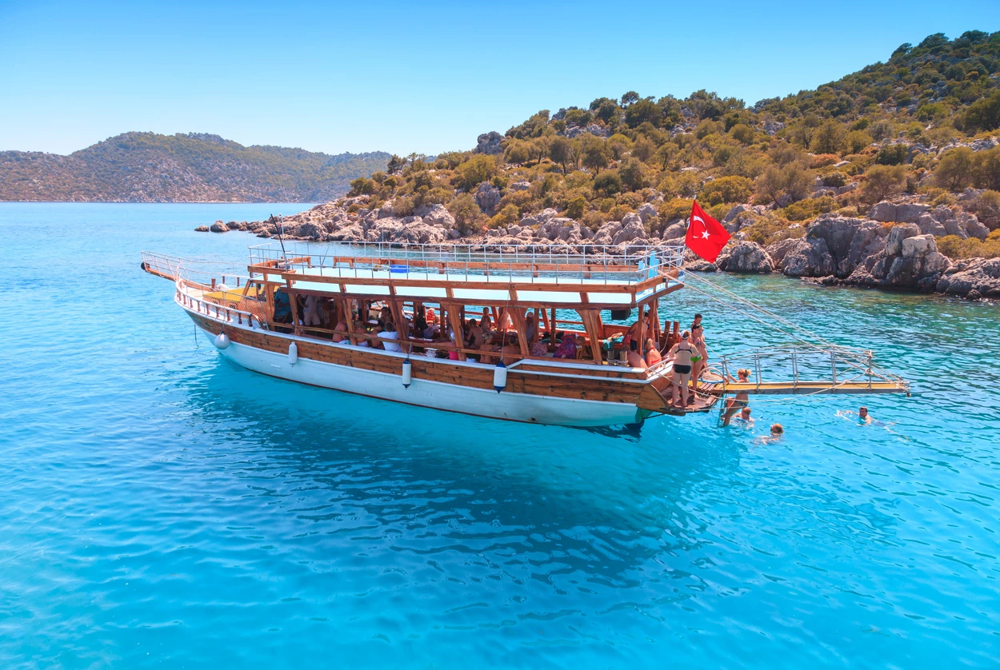

Bodrum
Türkiye’nin Uğruna Şarkılar Bestelenen Tatil Merkezi.
Bodrum gezisi ile Türk sahillerinin mükemmelliğini keşfedebilirsiniz. Kıyılar boyunca uzanan her şey dahil tatil köylerinde, her yıl dünyanın her köşesinden tatilciler bir araya gelir ve Türk misafirperverliğinin tadını çıkarır. Bodrum, aynı zamanda yalnızlık ve mahremiyet isteyenlere de cevap verir. Buradaki butik otellerde kafanızı dinleyebilir ya da el değmemiş doğa içerisine inşa edilmiş bungalov tarzı kamp yerlerinde tabiatın tadını çıkarabilirsiniz. Bodrum, aynı zamanda güneyin en çılgın gecelerine de sahne olur. Yaz boyunca Bodrum gece kulüpleri dolup taşarken dans eden insanların mutlu sesleri geceye karışır.

Fethiye
Mavi Yolculuğun Başlangıç Noktası.
Fethiye, mavi yolculuk planlıyorsanız görmeniz gereken ilk yerlerden biri olarak göze çarpar. Burada özel kurumlar aracılığı ile düzenlenen 3-4 günlük yat turları ile çevredeki adaları keşfe çıkabilir, el değmemiş sularda yüzebilir ve çılgın Türk gecelerinin tam ortasına dalabilirsiniz. Fethiye, konuklarını sadece mavi yolculukla şımartmaz; aynı zamanda el değmemiş doğası ile de kucaklar. Buradaki ormanlar içerisinde kurulmuş kamp alanlarının yanı sıra maceraperestler, kendilerini tabiatın içerisine bırakarak özel kamp yerlerini keşfedebilir. Fethiye; mağaraları, şelaleleri ve yüksek bölgeleri ile doğanın içinde kaybolmak isteyenler için tam anlamıyla bir cennet konumunda.

Antalya
Burada Kışın Bile Denize Girebilirsiniz.
Antalya, yılın üç mevsimi boyunca denize girilebilmesini sağlayan havası ile pek meşhur bir şehir. Burada Türkiye’nin en ünlü tatil köylerinin bulunmasına şaşırmamak gerek! Antalya’daki tatil köyleri, kış döneminden başlamak üzere rezervasyonlar ile tutulur, yaz döneminde buradaki her otel tamamen dolu olur. Antalya tatili düşünüyorsanız elinizi çabuk tutmanız ve yerinizi erkenden ayırmanız gerekir. Peki, Antalya’yı bu kadar ünlü yapan sadece güzel havaları mı? Tabii ki hayır. Antalya’nın çevresinde gezip görülebilecek birçok doğa harikası ve tarihi eser bulunuyor. Örneğin Düden Şelalesi, Türkiye’nin en popüler doğal tatil rotalarından biri olarak her dönem gezginleri kendine çekiyor. Ayrıca Hadrian Kapısı ve Yivli Minare gibi tarihi eserler, Doğu felsefesinin Batı anlayışı ile birleştiği bu güzel tatil yerinde görülebilecek yerlerin sadece ikisi.

Marmaris
Türkiye’de Ucuz Tatil Yapmak İsteyenlerin Seçimi.
Türkiye’de ucuz tatil yapmaktan bahsediyor ve denize girmek istiyorsak aklımıza Marmaris’in gelmesi çok doğal; çünkü buradaki fiyatlar gerçekten çok uygun. Sahil kesimi boyunca yükselen tatil köylerinde, erken rezervasyon dönemlerinde gerçekten çok ucuza oda kiralamak mümkün. Marmaris’te denize girmek istiyorsanız İçmeler Plajı’nı görmelisiniz! Burası yaz döneminde kalabalık oluyor, ama su çok temiz ve yüzmeye müsait. Dalgasız, sakin ve çarşaf gibi denizi ile İçmeler Plajı, Marmaris’te görülmesi gereken yerlerden biri. Marmaris’te gezilecek yerlerden bir diğeri de bölgenin en eski yapılarından Marmaris Kalesi.